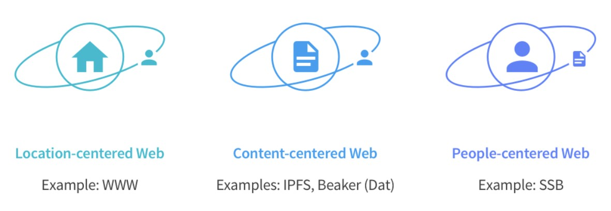

Why Web 3 - Threats
Build the mobile mesh Web that works with or without Internet access, to reach 4 billion people currently offline

Berners-Lee has seen his creation debased by everything from fake news to mass surveillance. But he’s got a plan to fix it.
[Vanityfair]
It was over four years ago that I coined the term “Web 3.0.” [d: !!]
...
To be sure, we can’t predict the first successful use-cases of this new platform and when they might appear. As with the development of the internet before it, the timeline could be measured in decades rather than months. But when Web 3.0 emerges, it will bring a whole new meaning to the phrase “the Digital Age.”
[Re corruption which Pacio and TEA can help fight]